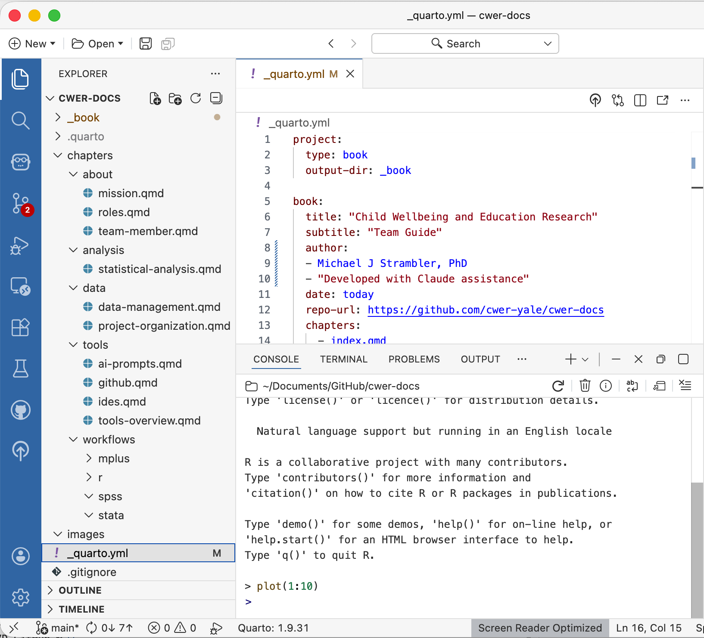

11 Project Organization
A well-organized project should answer basic questions through its structure alone. Where did the data come from? Which script produced which output? Is this analysis current? And it should be able to do this without requiring anyone to read code or ask someone who was there. This chapter describes the folder conventions we use across CWER projects. Once internalized, setting up a new project takes only a few minutes, but the payoff in clarity and reproducibility is substantial.
We use two types of organizational structures. One is for standard non-coding files. This is for files like literature, manuscripts, grant proposals, and so on. This will be the most commonly accessed structure. The other structure is for technical files that involve coding and data analysis.
11.1 Standard Organization
Use the following conventions for all non-coding folders and files stored on OneDrive or other shared drives.
11.1.1 The Short Version
- Folders and files: Title Case with spaces
- Dates: Always YYYY-MM-DD at the start
- Versions: v1, v2, v3 at the end
- No special characters: & # % @ $
11.1.2 Folders
Use Title Case with spaces. Keep names short and descriptive.
SEL Adverse Effects Project/
├── Raw Data/
├── Manuscripts/
│ ├── Prevention Science Journal/
│ └── SEL Journal/
├── Presentations/
│ ├── SREE/
│ └── AERA/
├── Meeting Notes/
├── IRB/
└── Grant Materials/11.1.3 Files
Documents with dates (meeting notes, memos, correspondence) — Format: YYYY-MM-DD Description.ext
2026-03-15 CWER Team Meeting Notes.docx
2026-01-20 PEER Partner Update.docx
2026-02-01 IRB Amendment Submission.pdfDocuments with versions (manuscripts, reports, protocols) — Format: Description vN.ext or Description vN Initials.ext
SEL Adverse Effects Manuscript v1.docx
SEL Adverse Effects Manuscript v2 MS.docx
SEL Adverse Effects Manuscript v3 JM.docx
Sway Classroom Protocol v4.docxData files — Format: YYYY-MM-DD Description.ext or ProjectName Description YYYY-MM-DD.ext
2026-03-01 SEL Adverse Effects Cleaned Data.xlsx
PEER 2025-2026 Teacher Survey Data.savPresentations — Format: YYYY-MM-DD Event or Audience Description.ext
2026-04-10 AERA SEL Meta-Analysis Slides.pptx
2026-03-15 PEER Partner Dashboard Presentation.pptx11.1.4 Version Control for Collaborative Documents
- Never save over someone else’s version
- Add your initials when returning edits:
v2 MS - The lead author consolidates edits and advances the version number:
v3 - Mark the final submitted version clearly:
v5 FINAL SUBMITTED - After submission, archive older versions in a subfolder called
Previous Versions/
11.1.5 What to Avoid
| Avoid | Use Instead |
|---|---|
final_FINAL_v2_forreal.docx |
Manuscript v4 FINAL SUBMITTED.docx |
March 15 meeting.docx |
2026-03-15 Team Meeting Notes.docx |
MSmeetingnotes3-15.docx |
2026-03-15 Team Meeting Notes.docx |
SEL&EdReport.docx |
SEL and Ed Report.docx |
data (copy) (2).xlsx |
Data v2.xlsx |
11.2 Technical Coding Organization
11.2.1 The Core Principle
For technical organization, every project has two types of files, and keeping them separate is the foundation of everything else:
Input files are fixed. Data that comes from outside the project such as partner-provided files, downloaded datasets, or exported survey data, goes in
data/raw/and is never modified by your scripts. If you need a cleaned version, your script reads the original, transforms it, and saves the result todata/cleaned/.Outputs are reproducible. Everything your scripts produce such as figures, tables, and rendered reports goes in
output/and can always be regenerated by rerunning the script that created it. Because of this, they are not committed to GitHub.
When you know that everything in data/raw/ is an original, untouched input, you can always trust it as the ground truth for the project.
11.2.2 Technical Project Structure
A typical CWER project looks like this:
my-project/
├── data/ # All data files
│ ├── raw/ # Original inputs — scripts never modify these
│ ├── cleaned/ # Processed data produced by cleaning scripts
│ └── README.md # Documents where each raw file came from
├── code/ # Analysis scripts (.qmd, .do, .R, .inp)
│ └── exploratory/ # One-off analyses and sanity checks
├── output/ # All generated outputs
│ ├── tables/ # Tables (.docx, .xlsx, .csv)
│ └── figures/ # Figures (.png, .pdf)
├── docs/ # Reports, presentations, manuscripts
└── README.md # Project overview
Not every project needs every subfolder. Adapt as needed, but keep the core separation between data/raw/ and everything else intact.
11.2.3 The data/ Folder
11.2.3.1 data/raw/
The data/raw/ folder holds files that come from outside the project — things your scripts read but never modify. This includes:
- Survey data exported from Qualtrics or a partner system
- Data received from school districts or community partners
- Publicly available datasets downloaded from external sources
- Codebooks and metadata provided by partners
Treat everything in data/raw/ as read-only. Scripts read from it but never write to it. If a raw file needs to be corrected, replace it and document the change in data/README.md. Do not silently overwrite it.
11.2.3.2 data/cleaned/
The data/cleaned/ folder holds processed versions of raw data produced by your cleaning scripts. These are intermediate files that other scripts will use as inputs, such as merged datasets, recoded variables, reshaped files, and so on. Because cleaned files are generated by code, they can always be recreated by rerunning the cleaning script.
11.2.3.3 data/README.md
Always include a data/README.md that documents where each raw file came from, when it was received, and any relevant notes. This takes two minutes to write and is invaluable six months later when you are trying to remember which version of a dataset came from which partner, or which Qualtrics export corresponds to which wave of data collection.
Example data/README.md:
# Data Sources
## raw/care4kids_survey_wave1.csv
- Source: CT Office of Early Childhood, received from Jane Smith via Yale OneDrive File Transfer
- Received: 2025-09-15
- Notes: Wave 1 only (fall 2025). N=342. Includes provider ID but no names.
## raw/sel_codebook_v3.xlsx
- Source: Internal; developed by CWER team
- Last updated: 2025-08-01
- Notes: Version 3 adds items from the revised teacher observation protocol11.2.4 The code/ Folder
Analysis scripts are numbered to reflect the order of the pipeline:
code/
├── 01_data_cleaning.qmd
├── 02_descriptives.qmd
├── 03_mlm_analysis.qmd
├── 04_tables_figures.qmd
└── exploratory/The two-digit prefix means scripts appear in pipeline order when you list the folder. Script 01 reads from data/raw/ and writes cleaned files to data/cleaned/. Script 02 reads from data/cleaned/ and produces descriptives. A new team member can look at the file list and understand the overall flow without reading any code.
Numbers reflect logical order, not strict dependencies. Script 04 might read outputs from both scripts 01 and 03. The numbering just helps you understand the overall structure.
When you add a new script, assign the next available number. If you retire a script, do not renumber the others. Leave gaps rather than creating confusion about which script a particular output came from.
11.2.4.1 Script Headers
Every script should begin with a header block identifying the author, purpose, inputs, and outputs:
# ============================================================
# Script: 01_data_cleaning.qmd
# Author: Your Name (your.email@yale.edu)
# Created: 2025-10-01
# Purpose: Clean and merge Wave 1 survey data
# Inputs: data/raw/care4kids_survey_wave1.csv
# Outputs: data/cleaned/wave1_cleaned.rds
# AI: Code developed with Claude assistance
# Review: Reviewed by Michael Strambler, 2025-10-05
# ============================================================The AI and Review lines reflect our commitments to transparency and quality control described in the Statistical Analysis chapter.
11.2.4.2 Script Status
Add a status field to each script’s YAML header to signal where it is in its lifecycle:
---
title: "Multilevel Model Analysis"
author: "Your Name"
date: today
status: development
---| Status | Meaning |
|---|---|
development |
In active development; outputs may change |
finalized |
Outputs are publication-ready; changes should be deliberate |
deprecated |
Superseded by a newer script; kept for reference |
When results are heading toward a report or publication, mark the relevant scripts finalized. This signals to collaborators that any changes should be intentional and that outputs should be re-verified if the script is rerun.
11.2.4.3 Exploratory Scripts
Think of the code/exploratory/ subfolder as a playground for for one-off analyses, sanity checks, and ideas you are testing. Exploratory scripts follow relaxed rules with no number prefixes required, and nothing else in the project depends on their outputs. This makes it safe to experiment without worrying about breaking the main pipeline. If an exploratory analysis turns out to be valuable, promote it to a numbered script in the main directory.
11.2.5 The output/ Folder
All generated outputs go in output/, organized into two subfolders:
output/
├── tables/
│ ├── descriptives_table.docx
│ └── mlm_results_table.docx
└── figures/
├── figure1_histogram.png
└── figure2_scatter.pdfKeep file names descriptive so their purpose is clear without opening them. Avoid generic names like table1.docx or figure_final.png.
11.2.6 The docs/ Folder
The docs/ folder holds reports, presentations, manuscripts, and other documents intended for external audiences or stakeholders. These are the human-readable products of the project — the things you send to partners, funders, or journals. Unlike output/, which holds raw generated files, docs/ holds polished, finalized deliverables.
11.2.7 Cross-Software Data Format
When data produced by one software needs to be read by another — for example, R producing a dataset that Mplus will read, or Stata producing a file that R will analyze — save in a format both can read:
- CSV is the most universally accessible format and the default choice for sharing data across R, Stata, Mplus, and SPSS
- Excel (.xlsx) is acceptable when the recipient is more comfortable with spreadsheets, but be aware that formatting and formulas can cause problems when read programmatically
- When saving from R for Mplus input, use
MplusAutomationpackage functions to ensure the format is correct
Within a single software environment, use native formats where appropriate (.rds for R objects, .dta for Stata) to preserve data types and attributes.